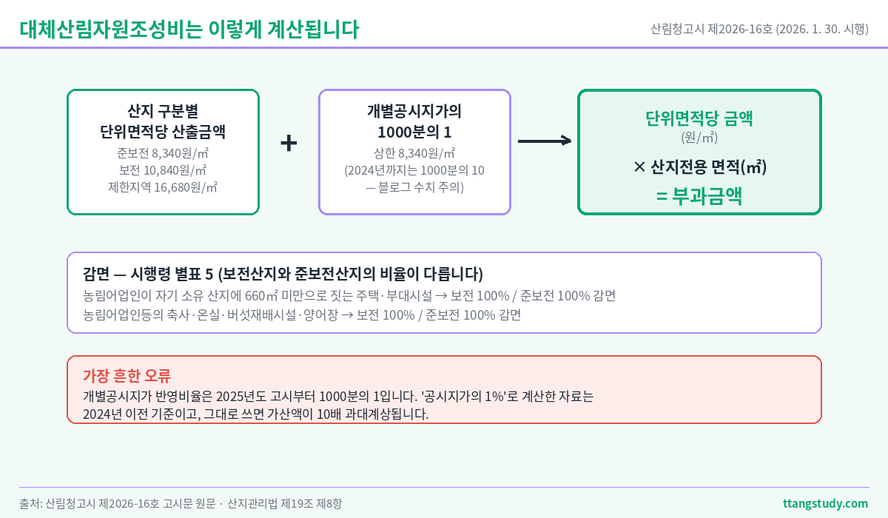

🌳 대체산림자원조성비 계산기
2026년 산림청고시 단가로 계산합니다 — 개별공시지가 가산과 감면 항목까지

토지이음의 '지역지구등 지정여부'에서 확인합니다. 보전산지는 산지관리법 제4조 제1항 제1호의 임업용산지·공익용산지입니다.
이 금액의 1000분의 1이 단위면적당 금액에 더해집니다(상한 8,340원/㎡). 부동산공시가격 알리미에서 확인할 수 있습니다.
대체산림자원조성비 계산식 — 고시 본문 그대로
부과금액 = 산지전용허가·산지일시사용허가 면적 × 단위면적당 금액
단위면적당 금액 = 산지별·지역별 단위면적당 산출금액 + 해당 산지 개별공시지가의 1000분의 1
개별공시지가의 1000분의 1에 해당하는 금액은 최대 8,340원/㎡으로 한정한다.
출처: 산림청고시 제2026-16호 「2026년도 대체산림자원조성비 부과기준」(2026. 1. 30. 발령·시행) 고시문 원문. 근거 법률은 산지관리법 제19조 제8항·제10항, 같은 법 시행령 제24조 제4항입니다.
2026년 대체산림자원조성비 단가
| 산지 구분 | 단위면적당 산출금액 | 근거 |
|---|---|---|
| 준보전산지 | 8,340 원/㎡ | 기준 단가 |
| 보전산지 | 10,840 원/㎡ | 시행령 제24조 제4항 — 준보전산지 기준 30% 가산 |
| 산지전용·일시사용제한지역 | 16,680 원/㎡ | 시행령 제24조 제4항 — 100% 가산 |
가산율로 역산하면 보전산지는 10,842원이 되지만 고시값은 10,840원입니다. 이 계산기는 역산하지 않고 고시에 적힌 세 값을 그대로 씁니다.
가장 많이 틀리는 지점 — 개별공시지가 반영비율
"개별공시지가의 1%를 더한다"
2024년도 고시(제2024-12호)까지가 1000분의 10이었고, 2025년도 고시(제2025-9호)부터 1000분의 1로 바뀌었습니다. 옛 기준으로 계산하면 가산액이 10배 과대계상됩니다.
"작년 단가로 계산하면 된다"
단가는 해마다 고시로 바뀝니다. 2025년도는 8,190 / 10,640 / 16,380원, 2026년도는 8,340 / 10,840 / 16,680원입니다. 납부 시점의 고시를 확인하십시오.
감면 — 보전산지와 준보전산지의 비율이 다릅니다
감면 대상과 비율은 산지관리법 시행령 [별표 5]에 있습니다(2026. 9. 18. 시행). 일반 지주가 실제로 해당될 수 있는 항목은 대부분 제3호에 모여 있습니다.
| 대상 | 보전산지 | 준보전산지 | 근거 |
|---|---|---|---|
| 농림어업인이 자기 소유 산지에 660㎡ 미만으로 짓는 주택·부대시설 | 100% | 100% | 별표 5 제3호 가목 |
| 농림어업인등의 축사·온실·버섯재배시설·양어장 | 100% | 100% | 별표 5 제3호 마목 |
| 초지법에 따라 조성된 초지 | 50% | 100% | 별표 5 제3호 아목 |
| 비영리법인의 사회복지시설 | 0% | 100% | 별표 5 제3호 카목 |
| 공공주택 특별법상 임대주택 | 0% | 100% | 별표 5 제3호 타목 |
| 청소년수련시설 | 50% | 50% | 별표 5 제3호 하목 |
표의 0%는 '면제'가 아니라 감면이 없어 전액 부과된다는 뜻입니다. '농림어업인이 설치하는 주택'은 농림어업을 직접 경영하면서 실제 거주하기 위한 것이어야 하고, 부대시설은 창고·축사·차고·화장실·탈곡장·퇴비저장시설을 말합니다(별표 5 비고 3). 위 표는 전체 목록이 아니며, 국가·지자체 공용시설과 산업단지 등은 제1호·제2호에 따로 있습니다.
계산 결과가 예상과 많이 다릅니까? 산지 구분과 면적을 커뮤니티에 남겨주시면 같이 짚어 드립니다.
발행 2026-11-17 · 최종 확인 2026-11-17